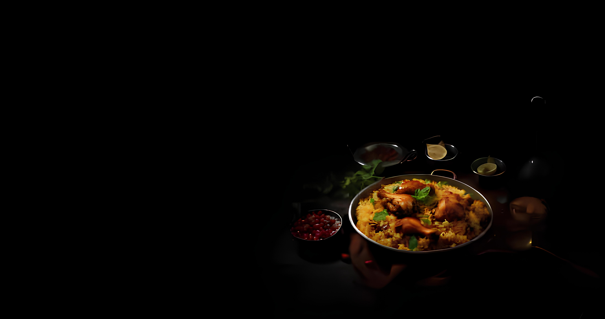

Chicken Biryani Recipe
Chicken Biryani is a delicious and aromatic rice dish made with tender chicken, fragrant spices, and basmati rice. Slow-cooked to perfection, it offers a rich blend of flavors with every bite. Topped with caramelized onions and saffron, it’s a true feast for the senses!
Ingredients
- Chicken, Basmati rice, Yogurt, Onions, Tomatoes, Green chilies
- Ginger-garlic paste, Turmeric powder, Red chili powder, Garam masala
- Coriander powder, Cumin powder, Bay leaves, Cloves, Cardamom
- Cinnamon stick, Salt, Lemon, Oil, Coriander leaves, Mint leaves, Food color
Method
- Mix chicken with yogurt, spices, and lemon juice. Rest for 30 minutes.
- Boil soaked basmati rice with whole spices until 70-80% done. Drain.
- Fry onions, add tomatoes, green chilies, and marinated chicken. Cook until tender.
- Layer chicken and rice, top with fried onions, coriander, mint, and saffron milk.
- Cover and cook on low for 20-25 minutes.
- Rest, mix gently, and serve hot with raita. Enjoy!